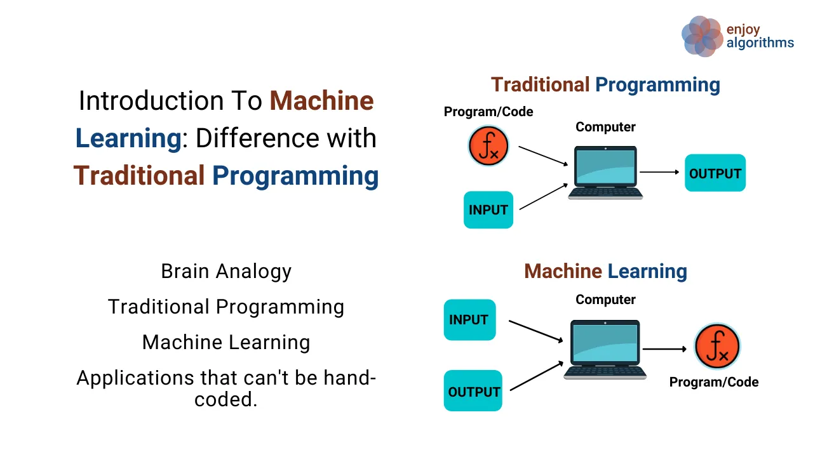

Explore the world of machine learning and mathematics with us. Our blog is dedicated to providing valuable insights, tutorials, and discussions on various topics related to machine learning, mathematics, and their applications.
From beginner-friendly introductions to advanced techniques, we cover a wide range of topics, including:
Machine learning is a subset of artificial intelligence (AI) that focuses on the development of algorithms and models that allow computers to learn and make decisions based on data. At its core, machine learning is about teaching computers to perform tasks without being explicitly programmed for each step. Imagine teaching a computer to recognize handwritten digits: rather than providing explicit instructions for recognizing each digit, we provide it with a large dataset of labeled examples and allow it to learn the patterns and features associated with each digit. This ability to learn from data and improve performance over time is what sets machine learning apart from traditional programming approaches.
In the image above, you can see the difference between traditional Programming Algorithms and Machine Learning Algorithms. The key difference is that traditional algorithms follow a set of predefined rules or instructions explicitly provided by the programmer, whereas machine learning algorithms learn from data and improve their performance over time without being explicitly programmed for each task.
Understanding the math behind machine learning algorithms is crucial for several reasons. Firstly, it provides insights into how these algorithms work, allowing practitioners to make informed decisions when selecting and fine-tuning models. Additionally, a solid understanding of the underlying mathematical principles enables practitioners to develop new algorithms and adapt existing ones to novel problems. Moreover, mathematical proficiency fosters a deeper understanding of the strengths and limitations of machine learning techniques, facilitating more robust and reliable applications in real-world scenarios.
Each branch of mathematics used in machine learning contributes uniquely to the understanding and development of algorithms:
By mastering these mathematical concepts, individuals can unlock the full potential of machine learning and contribute to groundbreaking advancements in technology and science.